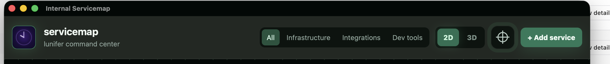

A cleaner top bar
The category menu takes the logo and title’s place.
Proposed
Existing ServiceMap styling · Interactive category and view controls
Current

The category menu takes the logo and title’s place.
Existing ServiceMap styling · Interactive category and view controls
